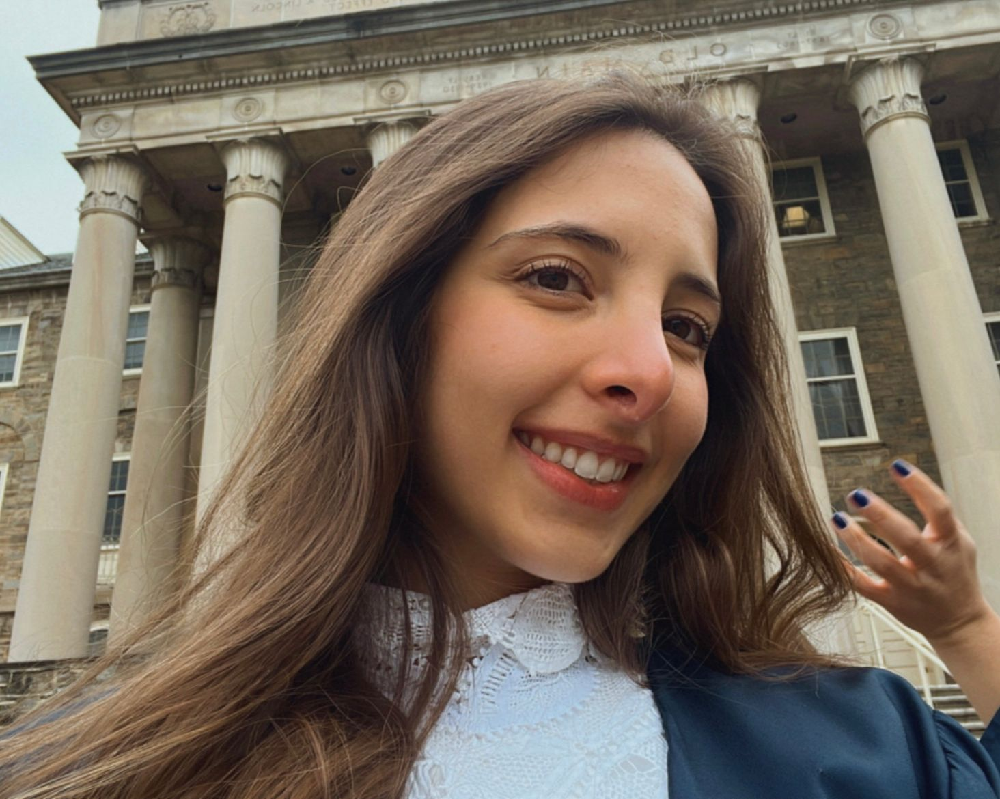

Carolina Tzemos Soares is a graduate in Industrial Engineering with a minor in French and Francophonic Studies from the Pennsylvania State University. She was born in Brasília, Brazil and has Greek origins from her mother's family side. Due to her bicultural environment while growing up, she became passionate about traveling and learning about new cultures. And this passion led her to study abroad in different countries, such as the United States, United Kingdom, Switzerland and Chile.
Carolina’s interest in the topic of fake news arose during 2022 elections in Brazil. “My family’s group chat would be loaded of fake news regarding the politic scenario, a lot of bias, exaggerated predictions about the new government and many unrealistic headlines.”
With this website, I hope to provide a new resource of media literacy and reduce, to some extent, the mass spread of fake news.
About:
Carolina Tzemos
Carolina Tzemos
